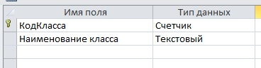
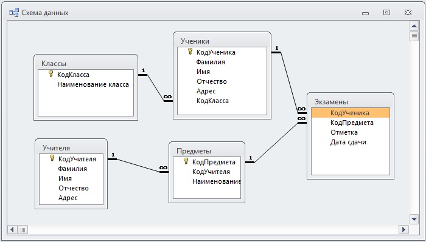

ОКР №1 по теме: "Хранение и обработка информации в базах данных"
Вариант I
- Откройте эту папку и скопируйте базу данных DB_10.txt.
Сохраните базу с именем 11Ф_NN_KONTR.accdb. Это вариант базы "Экзамены".
- Изучите структуру и содержимое таблиц.
- Добавьте в таблицу "Ученики" поле КодКласса. Тип данных: Числовой.
- Добавьте в базу новую таблицу "Классы" со следующей структурой:

- Свяжите таблицы как показано на схеме:

- Создайте ленточную форму для работы с таблицей "Ученики" (например, такую).
- С помощью формы внесите в таблицу "Классы" следующие классы: 11"В", 11"Г", 11"Д".
- Внесите в таблицу "Ученики" свои фамилию, имя, отчество и свой класс.
- Внесите изменения в данные таблицы "Ученики", разделив учеников поровну (по 11 человек) по классам.
- Создайте запрос "Отличники", содержащий содержащий фамилию имя отчество ученика, название предмета и отметку за экзамен по этому предмету для получивших 9 или 10 баллов.
- Создайте отчет "Отличники", содержащий фамилию, имя, отчество ученика, название предмета и отметку за экзамен по этому предмету для получивших 9 или 10 баллов.
Требования:
- результаты сгруппируйте по предметам, фамилии учащихся выводите в алфавитном порядке;
- заголовок отчета укажите "Результаты экзаменов: отметки 10 и 9";
- нижний колонтитул "Страница номер из всего страниц" не удаляйте.
- Создайте отчет "Результаты экзаменов по классам", содержащий ученика, класс, название предмета и отметку за экзамен по этому предмету.
Требования:
- результаты сгруппируйте по классам и по ученикам;
- отметки сортируйте по названиям предметов в алфавитном порядке;
- включите в отчет средний балл каждого ученика;
- заголовок отчета укажите "Сводный отчет по результатам экзаменов";
- нижний колонтитул "Страница номер из всего страниц" не удаляйте. (Пример отчёта)
- Файл сохраните в папку ТемКонтроль2
|